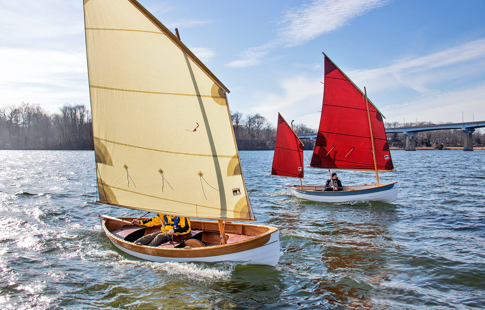

Introduction and Overview
This blog will document the weekly progress of a wooden boat built by Penn State Abington students participating in a sequence of courses held on-site at Independence Seaport Museum’s Workshop on the Water at Penn’s Landing in Philadelphia. Courses are co-taught by Penn State Abington Art Department faculty members H. John Thompson, Associate Teaching Professor of Art, and Bonnie Levinthal, Professor of Art, in collaboration with David Dormond, Workshop on the Water Assistant Director and Shop Educator.
